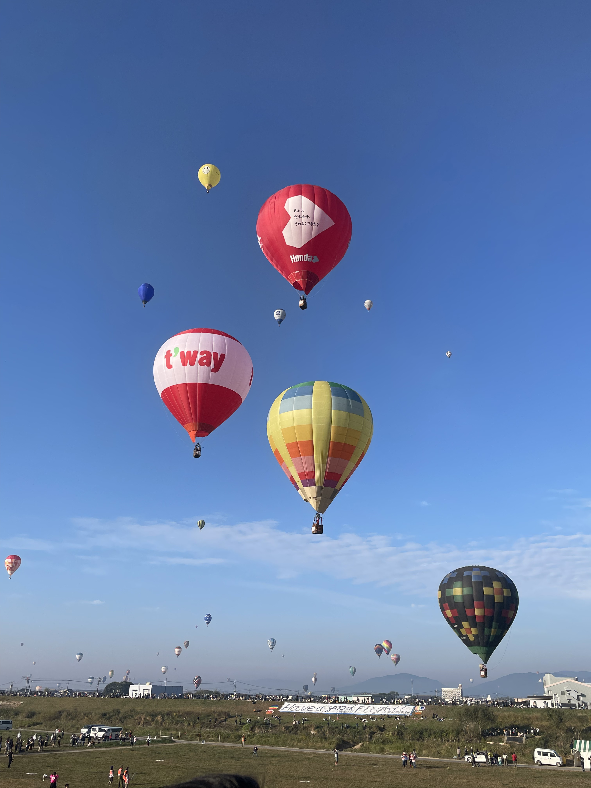
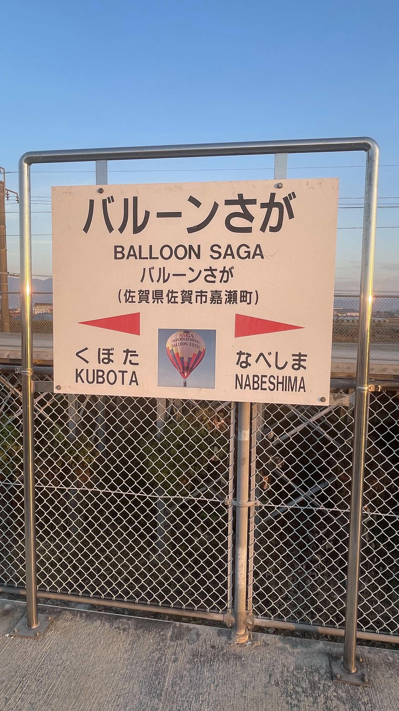
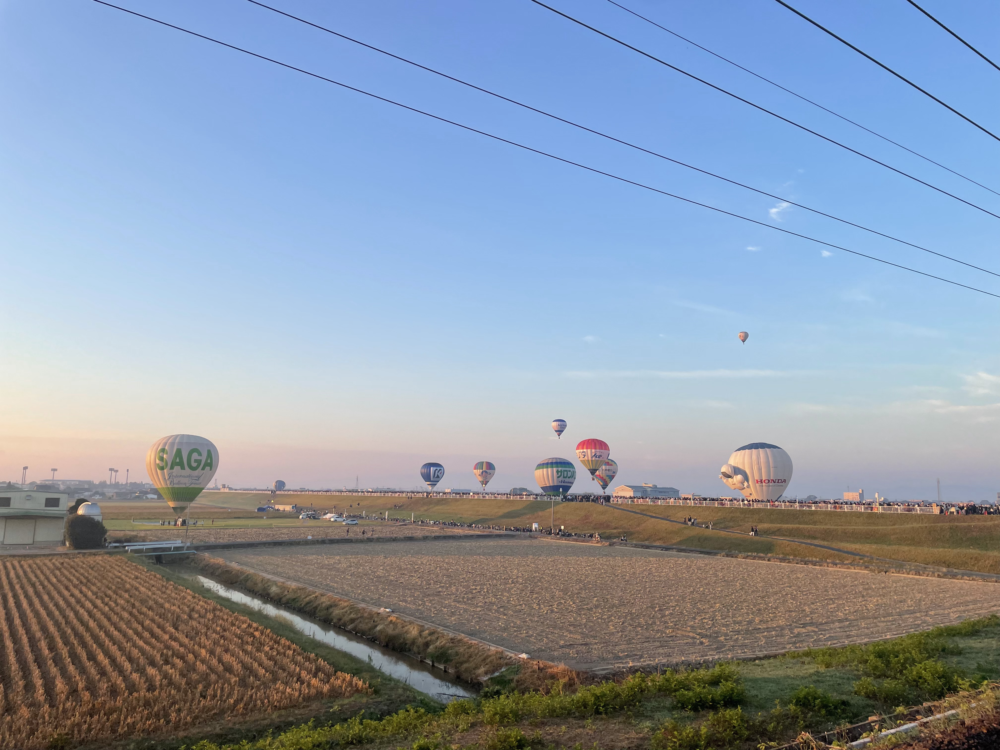
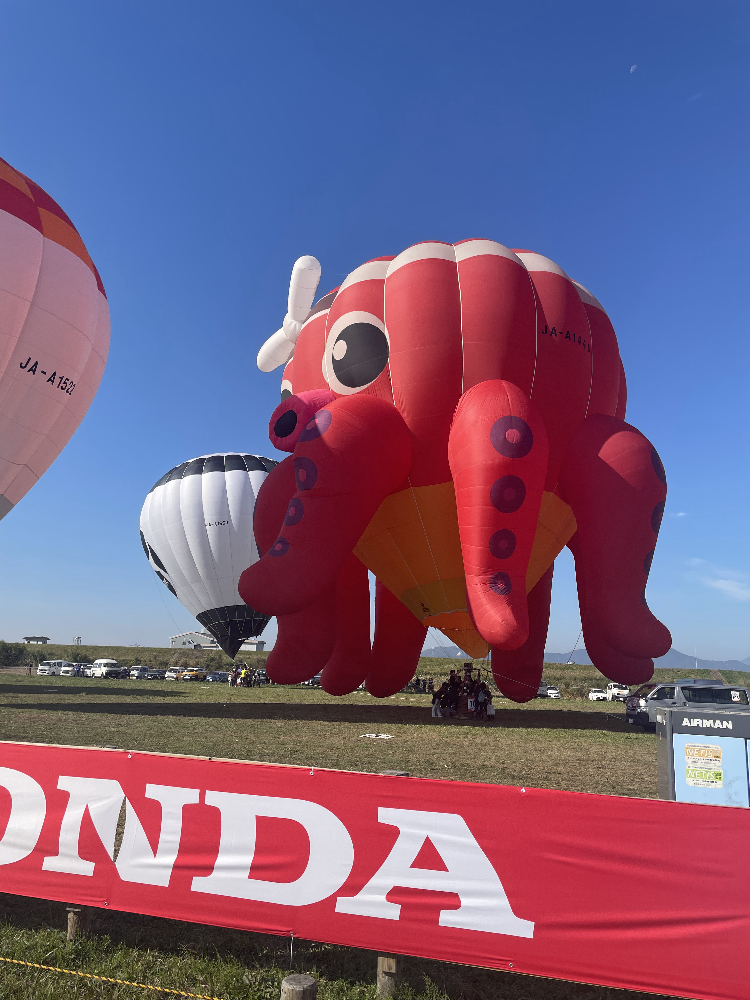
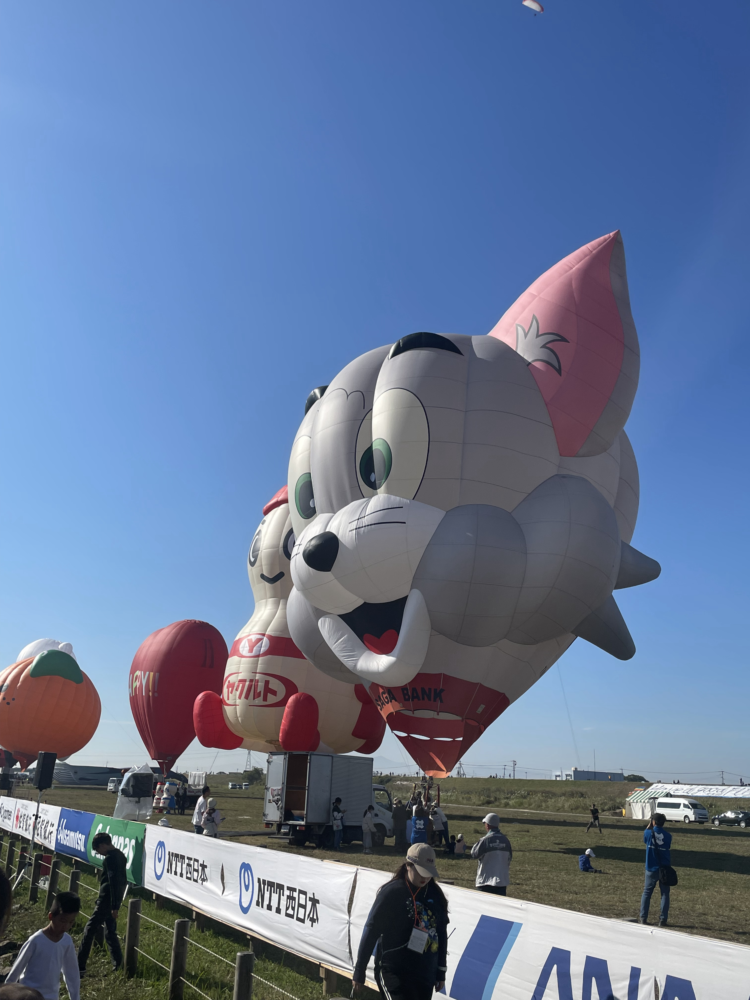

Saga International Balloon Festa
空を見上げれば気球がたくさん！
佐賀県佐賀市で2023年は11月１日〜５日に開催されました。うp主は最終日の５日に訪問しました。
バルーンさが駅到着！
佐賀駅から電車で２駅でバルーンフェスタ最寄駅のバルーンさが駅に到着しました！なんとこの駅、バルーンフェスタ開催中しか営業しない臨時駅なのです。佐賀駅で切符を購入する場合、往復切符を購入するのがオススメです！（帰りに切符を買おうとすると、行列に並ぶ羽目になる可能性があります）
うp主は6時５８分に着きましたが、なんともう飛び始めてました！

入口ですらこの大混雑💦 競技中はめちゃくちゃ混んでます！
気球が一斉に離陸していきます。ほんま綺麗ですわ
少し時間が経つと、西に飛んでいった気球と、東から飛んできた気球とで、なんと、、、３６０度見渡す限り気球になりました！！
２つ目の競技で東から飛んできた気球は、会場のターゲットを目掛けて飛んできます。ターゲットにあそこまで近付けるのはすごいですよね♪
ターゲットのど真ん中にリボンを落とすと、会場全体で”バンザイ”をして喜びます。
朝の競技フライトが終わると、”バルーンファンタジア”という面白気球が並びます。
 タコやトム、ヤクルトくんなど、色々なキャラがいました！このとき少し風が強くなってしまい、観客は柵の外から見ることになりましたが、やってくれるだけ感謝感謝。